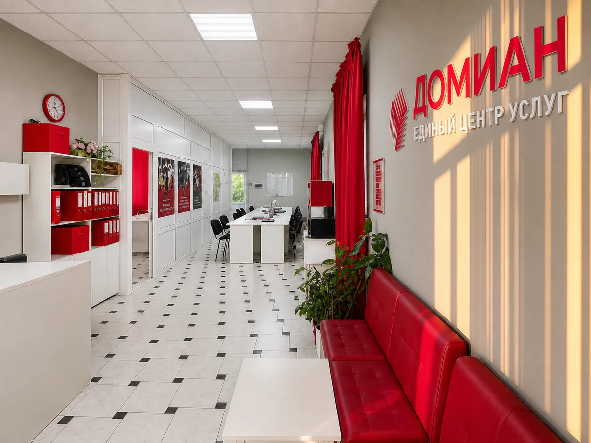
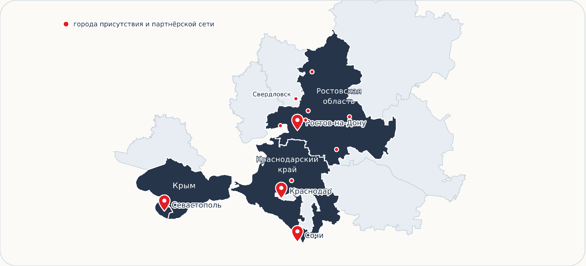
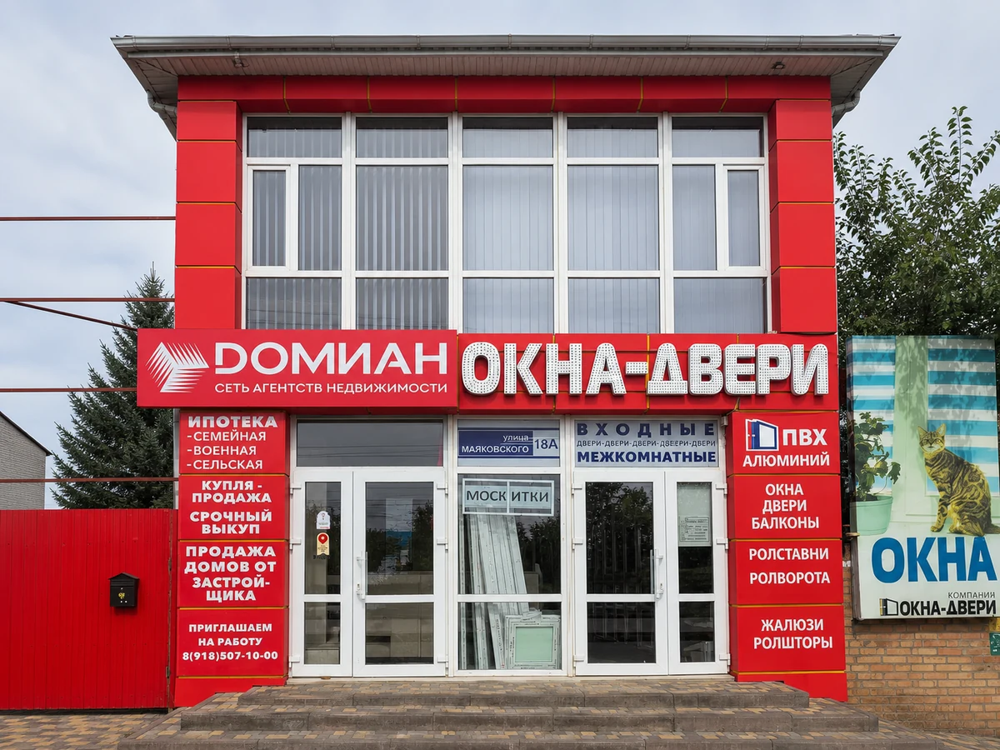
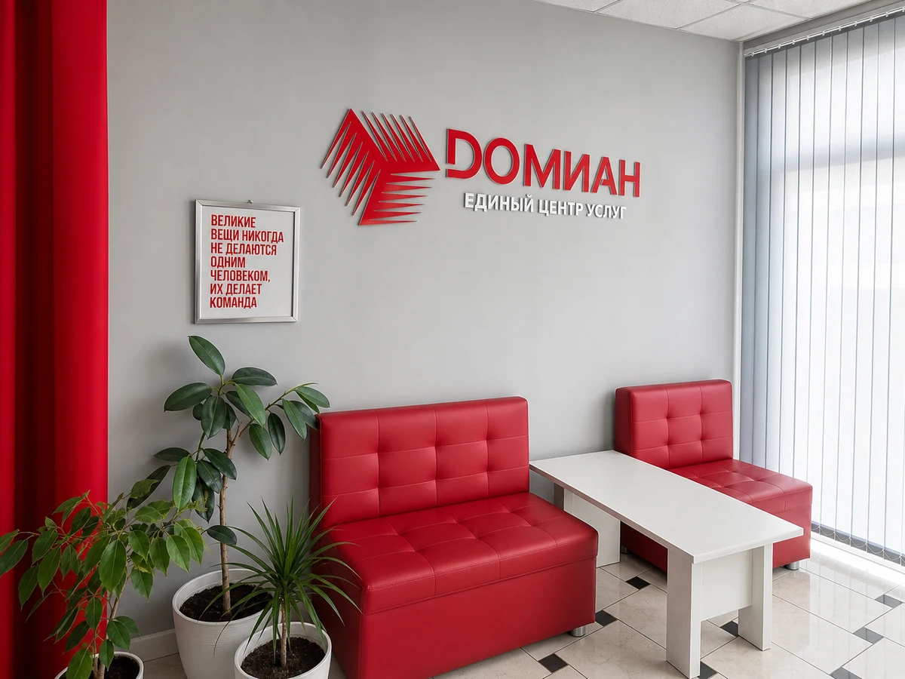
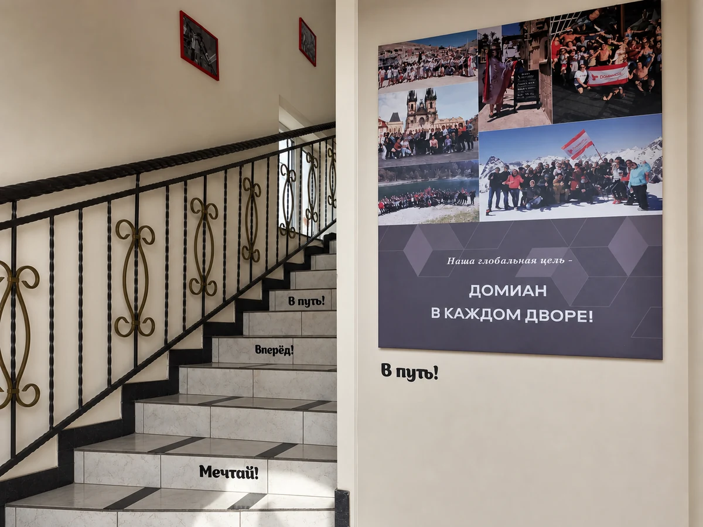

Я агент или брокер
Перейдите от личных сделок к собственному офису и команде.
Франшиза агентства недвижимости
Бренд, CRM, юридическая поддержка, HR, централизованное обучение, новостройки, маркетинг и готовая система управления офисом.
Член Российской гильдии риелторов

Масштаб сети
Сеть развивает офисы, инфраструктуру, межофисные связи и общие правила с 2008 года. Партнёр начинает не в одиночку.

Города показывают масштаб сети и не раскрывают связь с финансовым рейтингом.

Фактические показатели
Сильнейшие франшизные офисы показывают результаты, сопоставимые с ведущими собственными офисами сети.
Финансовые показатели основаны на фактических результатах отдельных действующих франшизных офисов Dомиан. Результаты конкретного бизнеса зависят от региона, команды, количества сделок, расходов и участия собственника.
Масштабирование
Партнёры Dомиан масштабируют бизнес и развивают несколько офисов внутри одной системы.
Франшиза может стать основой масштабируемого бизнеса. Решение о развитии нескольких офисов зависит от результата и готовности конкретного партнёра.
Три точки входа
Перейдите от личных сделок к собственному офису и команде.
Подключите бренд, сервисы, обучение и инфраструктуру действующей сети.
Войдите в недвижимость через готовую систему с поддержкой профильных отделов.
Цена организационной работы
Самостоятельно
С Dомиан
Вы покупаете не набор сервисов, а годы уже проделанной организационной работы.
Инфраструктура через выгоду
Партнёр концентрируется на офисе, команде и продажах, а не собирает каждый бизнес-контур с нуля.
Клиенты, объекты и активность агентов собраны в CRM Domianix.
Проверку документов, договоры и юридическую часть сделки поддерживает профильный центр.
Новые сотрудники подключаются к готовой программе офлайн, онлайн и в записи.
HR, регистрация, документы и безопасность встроены в общий процесс.
Условия, акции, контакты застройщиков и брокер-туры централизованы.
Доступы, технические вопросы и обращения идут по единому порядку.
Сетевой эффект
Запрос клиента остаётся внутри профессионального контура Dомиан.
Агент становится специалистом своей территории.
Другую территорию принимает соответствующий специалист сети.
Вознаграждение распределяется по действующим правилам сети.
Новостройки и обучение
Актуальные условия, акции, представители застройщиков, брокер-туры и продуктовая подготовка централизованы.

Продавец · покупатель · сервисы сделки · новостройки · ипотека · юридическая часть · соцсети · ИИ · практика · сертификация.
Офлайн + онлайн + записиПартнёрские услуги
Партнёрская комиссия распределяется прозрачно после выполнения услуги.
Среда сети
Корпоративная и образовательная среда помогает развивать команду и поддерживать мотивацию агентов.

Запуск
Пять понятных этапов вместо самостоятельного поиска десятков подрядчиков и процессов.
Условия
Чем выше ежемесячный комиссионный оборот, тем ниже ставка. Диапазон ставок — от 7% до 3%.
Партнёр получает не только бренд, но и CRM Domianix, юридическую и ипотечную поддержку, централизованное обучение, HR, безопасность, маркетинг, IT / HelpDesk, работу с застройщиками и управленческую систему.
Да, внутри сети есть реальные многоофисные партнёры. Возможность второго офиса зависит от результатов первого, готовности команды и управленческой зрелости партнёра.
В 2025 году ведущие франшизные офисы показали от 30,7 до 60,2 млн ₽ комиссионного оборота среди ТОП-5. В I полугодии 2026 года показатель лидера составил 44,4 млн ₽. Комиссионный оборот не является прибылью собственника.
Ставка уменьшается по мере роста ежемесячного комиссионного оборота и может снижаться до 3%. Диапазон ставок — от 7% до 3%.
40% партнёрской комиссии получает агент, 30% — собственник франшизного офиса, 30% — центральный офис. Таким образом, 70% остаётся в офисе и его команде.
Опыт полезен, но не обязателен. Предпринимателю важно лично включаться в запуск и управление; профильную подготовку и сервисы поддерживает система Dомиан.
Ориентир — около месяца. Фактический срок зависит от регистрации бизнеса, готовности помещения, подключения инфраструктуры и команды.
Персональный следующий шаг
Специалист франшизного отдела поможет оценить исходную ситуацию, территорию и составить персональный план запуска.
На сайте нет автоматического расчёта прибыли: персональный сценарий обсуждается со специалистом на основе фактических вводных.